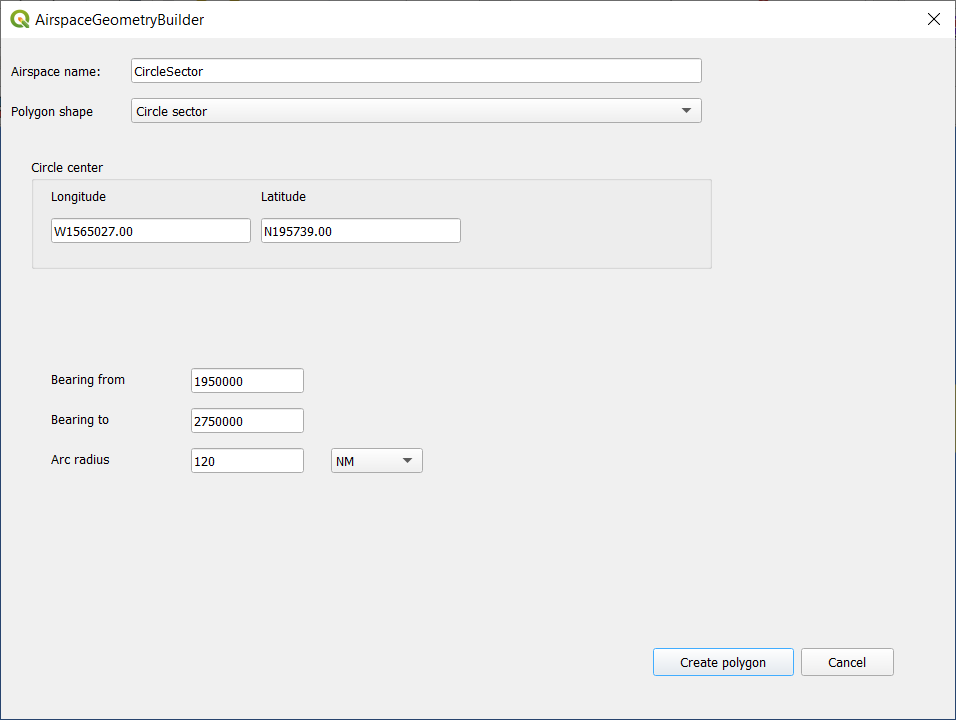
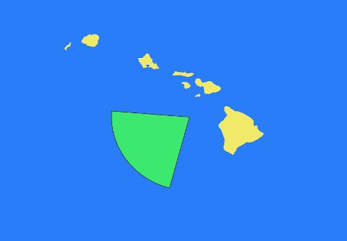
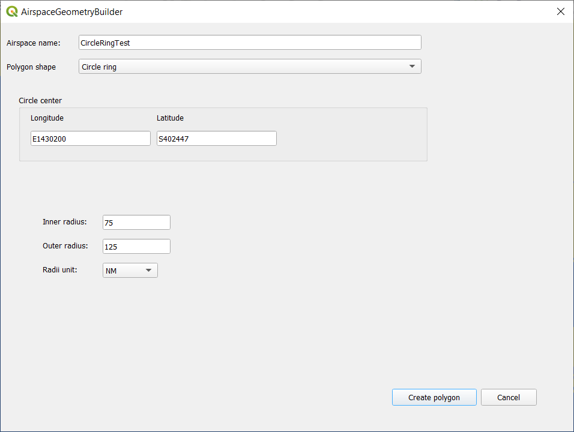
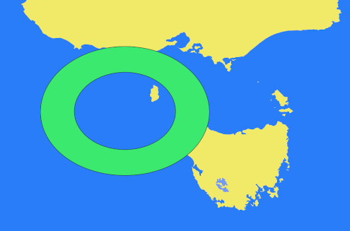
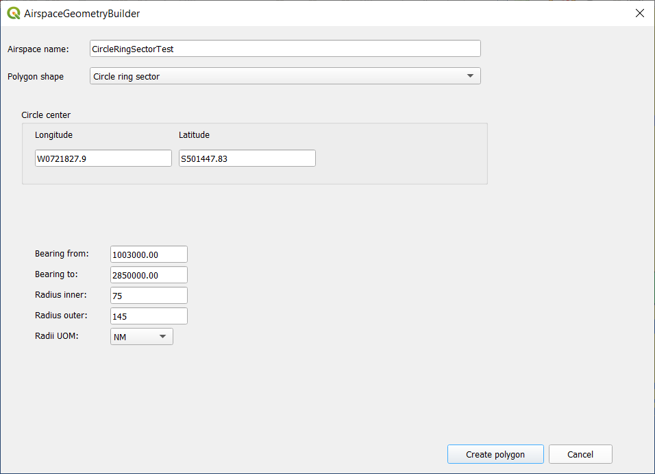
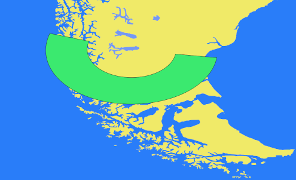

Airspace Geometry Builder
Create aviation airspace geometries in QGIS directly from bearings, distances and reference coordinates.
The problem
Aviation airspace definitions often describe boundaries using bearings, distances and reference points rather than explicitly listing every coordinate needed to construct the geometry.
Creating these boundaries manually requires calculating intermediate points and drawing the resulting shapes. This can be time-consuming, particularly when working with curved boundaries and complex airspace definitions.
The solution
Airspace Geometry Builder is a QGIS plugin that generates common airspace geometries from their defining parameters. It supports circles, circle sectors, circle rings, circle segments and circle ring sectors.
Instead of calculating every boundary coordinate manually, users can enter the relevant reference coordinates, bearings and distances to construct the required geometry.
Value
Less manual calculation
Avoids manually calculating intermediate coordinates for curved airspace boundaries.
Faster geometry creation
Builds common airspace shapes directly from their defining parameters.
Workflow consistency
Uses a repeatable process for creating geometries from bearings, distances and reference points.
Native GIS workflow
Integrates airspace geometry construction into the QGIS environment.
Examples
The following examples illustrate the input parameters and resulting geometries for the supported airspace shapes.
Circle sector
Input data: centre, radius and angular limits.

Output: generated circle sector.

Circle ring
Input data: centre and inner and outer radii.

Output: generated circle ring.

Circle ring sector
Input data: centre, inner and outer radii, and angular limits.

Output: generated circle ring sector.
